Documentation
Grâce à la doucmmentation, vous pouvez ajouter installer Cubanim sur projet. Suivez la documentation étape par étape.
Prérequis
Unity (version 2020.3.20 ou supérieur)
Obtenir Vuforia Engine
Pour ce faire il vous faudra installer Unity et vous vous créer un compte gratuit en suivant ce lien.
Vuforia Engine est nécessaire pour utiliser Cubanim, vous devez donc vous créer un compte développeur
Configuration de Vuforia
Une fois votre compte créé, il vous faut obtenir une licence, cliquez sur Get basic,
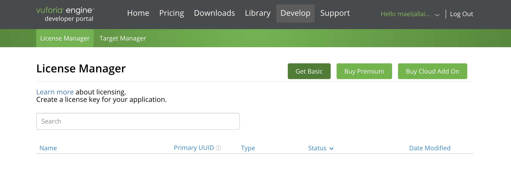Donnez lui un nom et une fois ceci fait, vous pouvez commencer à inclure des images target.
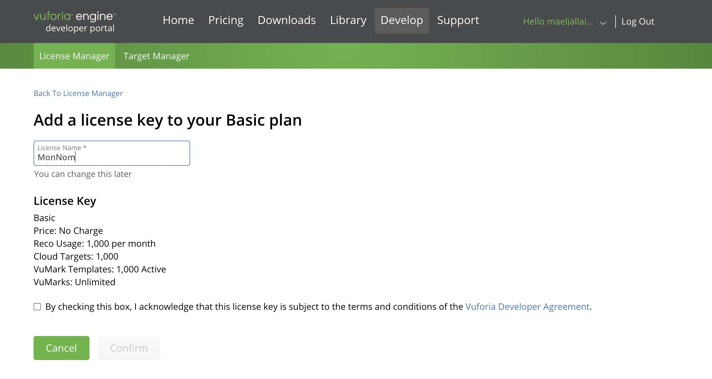Le fonctionnement de Vuforia va permettre à la caméra de reconnaître des images targets grâce à des points d'intersection présents sur l’image.
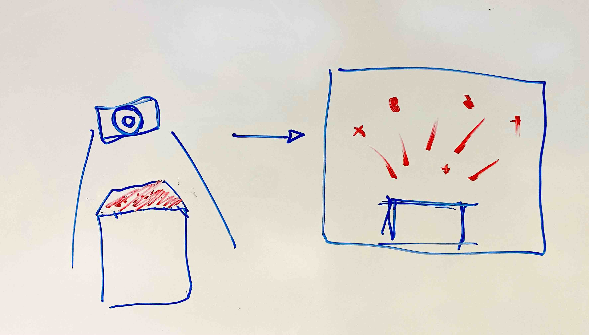Pour ajouter des images targets, vous devez d’abord créer une base de données pour y mettre toutes vos images target. Cliquez sur “Add Database”.

Puis choisissez “Device” en nommant votre database (Base de données).
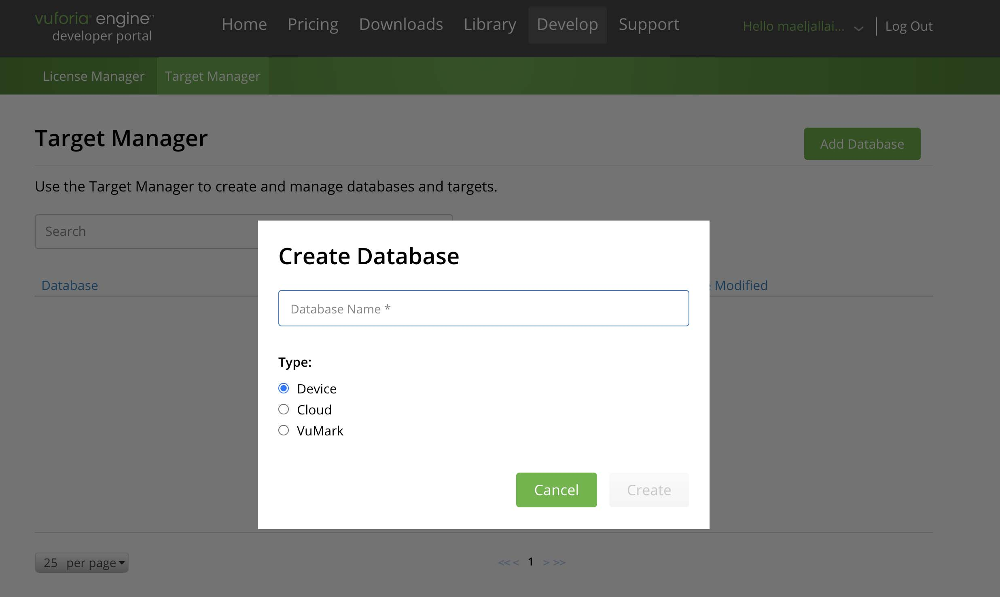Une fois ceci fait vous pouvez ajouter des images targets dans votre base de données Vuforia. aller sur `Target manager`, et cliquez sur “add target”.
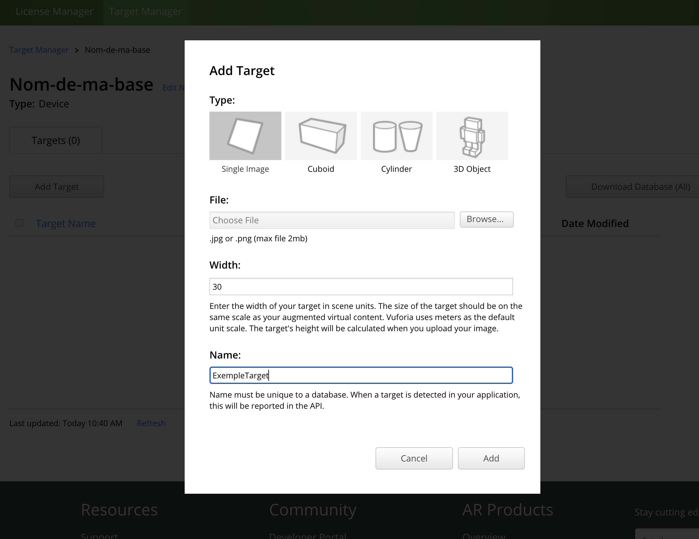Il faut alors mettre “Single Image”, avec un “width” de 30 ce qui est suffisant pour la largeur d’un cube de 10 cm. et Importez votre image.
Après votre image importée, vous pouvez voir un nombre d’étoiles en fonction que Vuforia a de la facilité à reconnaître l’image target.
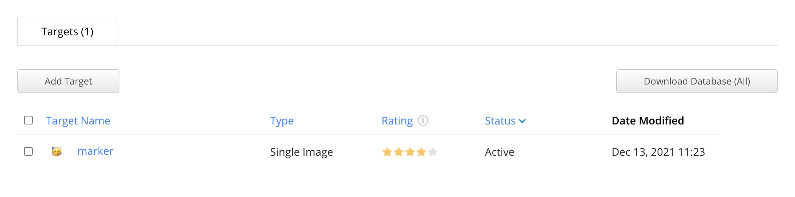En cliquant sur votre image, vous pouvez aussi voir les détails du marquage en cliquant sur “Some Features”.
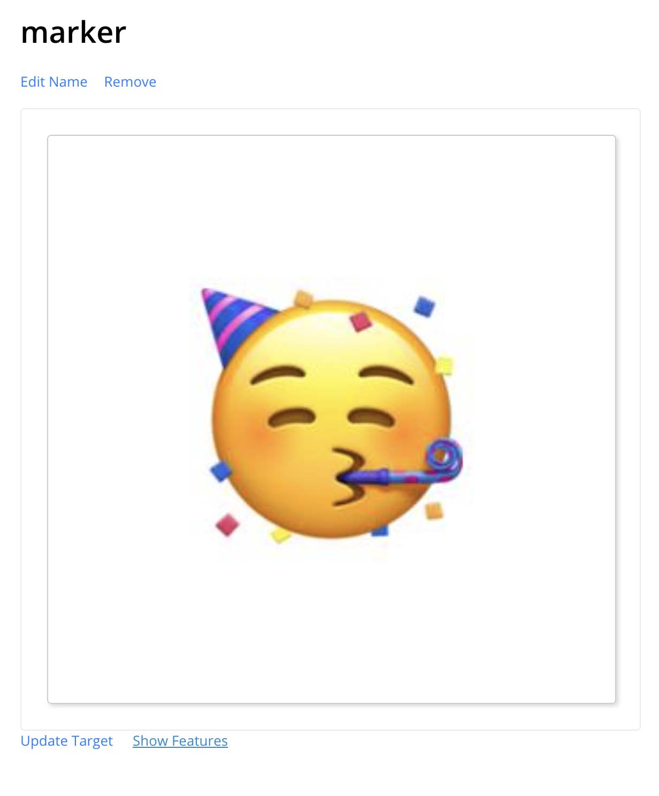 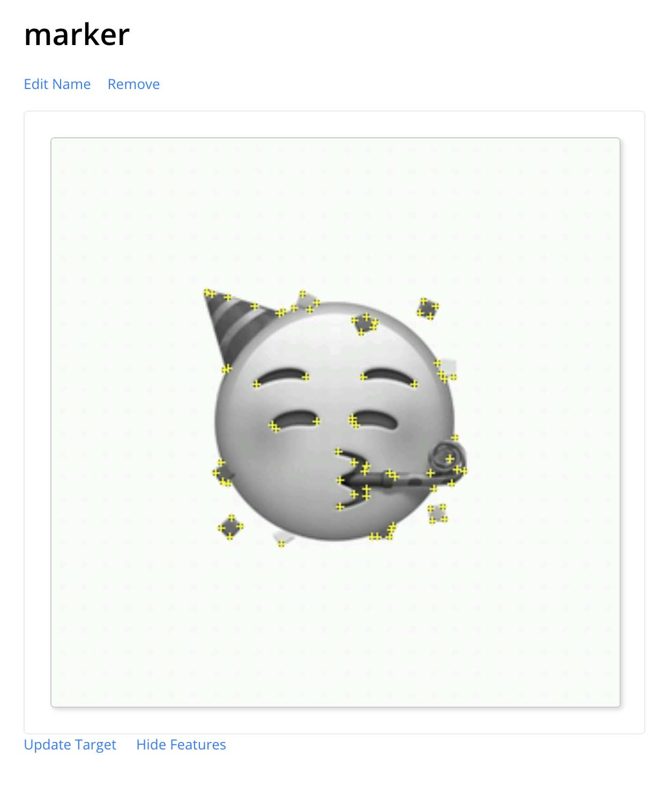Une fois toutes les images importées dans votre Vuforia. Téléchargez votre fichier Vuforia en cliquant sur “Download Database” puis sur “Unity Editor”.
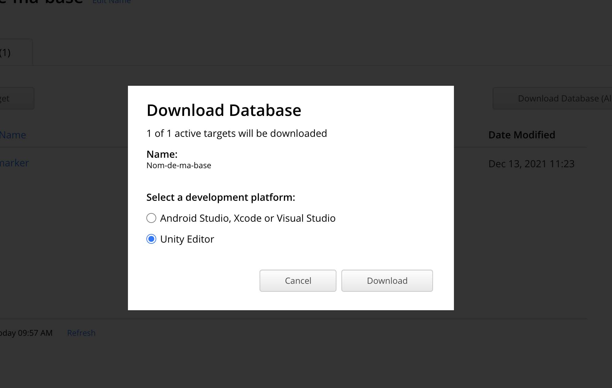Vuforia vous a donc exporté votre database en fichier, dans le cas ici “Nom-de-ma-base.unitypackage”.
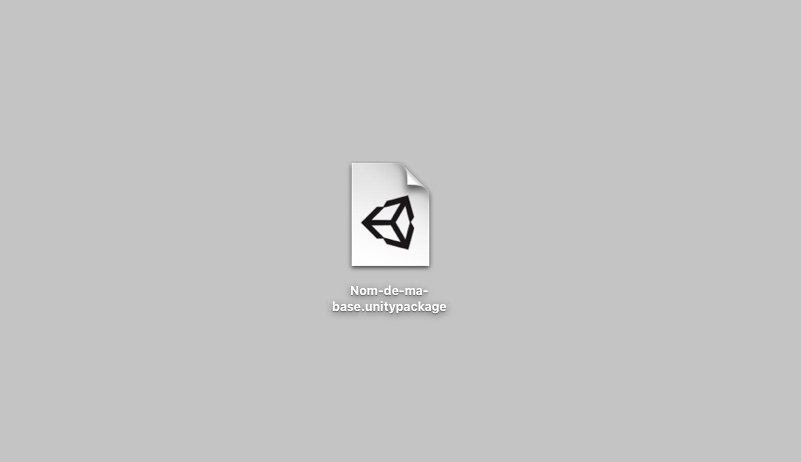Ouvrez votre fichier et importer-le dans votre projet Unity
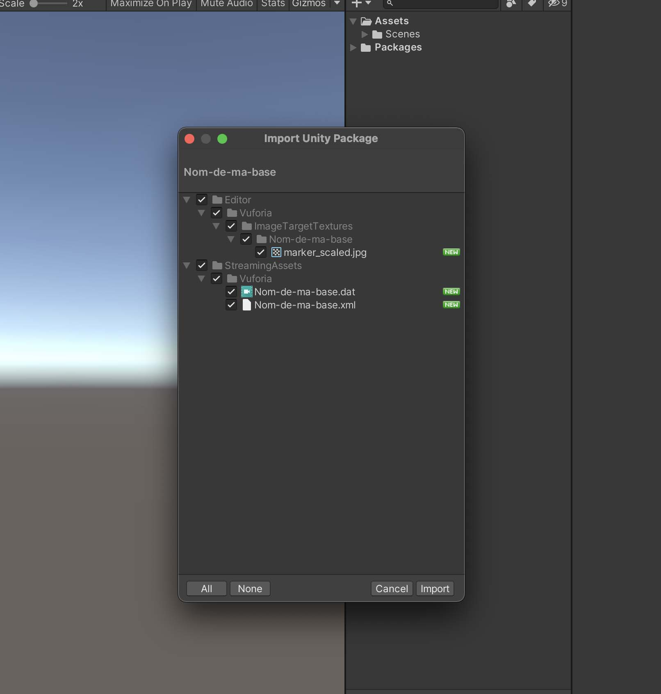Téléchargez le package Vuforia disponible dans la page Downloads. Et ouvrez-le pour l'importer dans votre projet.
Après l'installation, si vous allez dans "Window" > "package manager", vous pouvez voir que le package à été correctement installé.
La suite de la documentation arrive dans la semaine...